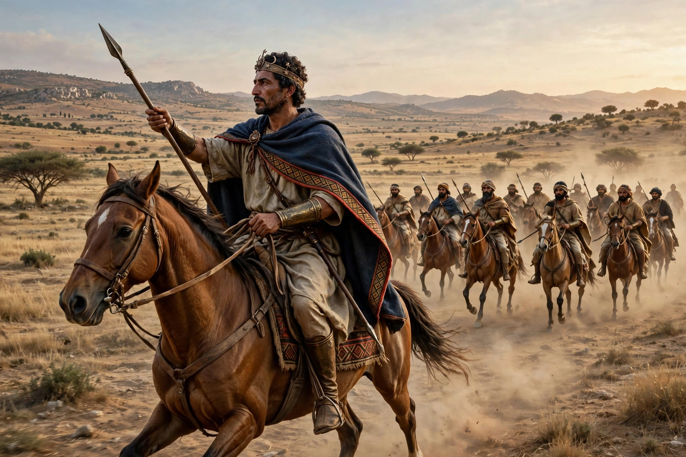

| Masinissa | |
| Reign | c. 202 – 148 BC |
|---|---|
| Kingdom | Numidia (unified) |
| Born | c. 238 BC |
| Died | 148 BC, aged about 90 |
| Father | Gaia, king of the Massylii |
| Spouse | Sophonisba (briefly, 203 BC) |
| Successor | Micipsa (with Gulussa and Mastanabal) |

Masinissa (c. 238 – 148 BC) was the first king of a unified Numidia, in modern-day Algeria and Tunisia. Originally a prince of the Massylii Berber tribe and an ally of Carthage in the Second Punic War, he switched allegiance to Rome, and his Numidian cavalry proved decisive at the Battle of Zama (202 BC), which ended the war. Rome rewarded him with the territories of his rival Syphax, creating a large client kingdom that he expanded for half a century at Carthage's expense.
Masinissa, son of King Gaia, was educated at Carthage and fought for the Carthaginians in Spain against Rome. Betrothed to Sophonisba, daughter of the Carthaginian general Hasdrubal Gisco, he lost her when Carthage married her to Syphax, king of the western Masaesyli, to secure Syphax's alliance — and Masinissa himself lost his kingdom. Cast off, he allied with the Roman commander Scipio Africanus, contributing superb light cavalry. At the Battle of the Great Plains (203 BC) Masinissa and the Roman Laelius defeated Syphax; Masinissa captured Cirta and briefly married Sophonisba, who took poison rather than be paraded in a Roman triumph. At Zama, his cavalry's return to the field completed Hannibal's defeat.
Recognized by Rome as king of a united Numidia, Masinissa spent five decades building a settled agricultural kingdom: Livy and later writers credited him with turning nomadic herders into farmers and making Numidia a granary exporting grain to the Mediterranean. He repeatedly encroached on Carthaginian territory, confident that Rome would arbitrate in his favor; these provocations were a principal cause of the Third Punic War (149–146 BC). He died in 148 BC at about ninety, still vigorous — Polybius admired his endurance. Scipio Aemilianus arranged the succession among his sons Micipsa, Gulussa, and Mastanabal. Numidia remained a Roman ally until the Jugurthine War a generation later.
Masinissa is remembered in Algeria and Tunisia as a founding father figure — a unifier of the Berber lands. His tomb near Cirta (Constantine), the Soumaâ du Khroub, is attributed to him. An often-quoted saying attributed to him holds that "Africa is for the Africans."